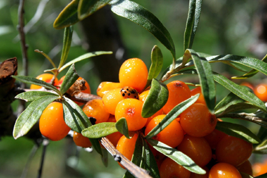
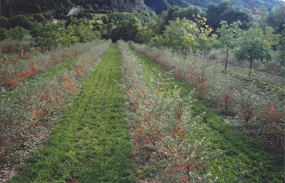

L'argousier, un petit arbuste sauvage :
L’argousier arbuste à épines et à feuilles, est originaire du continent Européen et de l'Asie. On le trouve en Europe dans toutes les régions d’altitudes, et aussi au bord des ruisseaux. Il se nourrit du soleil et de la lumière d’où il tire toute son énergie.
Il est pourvu d'une écorce brun foncée, avec des branches munie de nombreuses épines de dimensions différentes, ses feuilles sont simples étroites et munies d'écailles argentées plus pâles sur le dessous. Ses fruits sont sous forme de petites baies regroupées le long des branches et qui peuvent persister l'hiver, ils sont jaunes ou orange à maturité (vers le mois de septembre) et mesurent de 6-8 mm de diamètre.
Cet arbuste dépasse rarement 3 à 4 mètres mais certaines variétés peuvent atteindre 20 mètres. Il possède une croissance rapide, un système racinaire dense, résiste à la rigueur des différents climats (il vit entre 40°C et - 40°C), à la sécheresse et est capable de fixer l'azote. Peu exigeant, il ne nécessite pas d'engrais, il colonise facilement les terres pauvres comme les dunes, les rocailles ou les montagnes (en France, on en trouve notamment dans les Alpes). Ces caractéristiques en font une plante de choix pour lutter contre l'érosion des sols et la désertification, pour enrichir la terre et l'habitat faunique ou comme plantations brise-vent en haies denses. Il conserve par ailleurs ses jolies baies oranges tout l'hiver ce qui le rend très apprécié des oiseaux.
L'argousier est connu depuis l'Antiquité mais ce n'est que depuis les années 40 et 50, sous l'impulsion de chercheurs ruses, que la plante a commencé une nouvelle carrière.
De la recherche à la culture :
Jean-François Gonfard, est le premier à avoir cru à la culture de l'argousier.
De nombreuses années de recherche, de tests, d'expérimentations diverses ont été nécessaires, afin d'être le premier à cultiver les arbustes d'argousier à partir de boutures sur ½ hectare dans les années 90 dans les Hautes-Alpes.
Les arbustes portent généralement des fruits après trois ans et donnent des rendements maximaux après sept à huit ans. Les pieds mâles fleurissent un peu plus tôt que les femelles et pour une période de 6 à 12 jours, 12-15 semaines sont nécessaires jusqu'à la pleine maturité des fruits. La longévité s'étend à plus de 20 années.
La densité de plantation est de 2000 à 2500 plants par hectare, et il faut prévoir 1 plant mâle pour 9 plants femelles. Les mâles doivent être implantés en périphérie de parcelle, la pollinisation se faisant par le vent.
Les conditions climatiques des Hautes-Alpes sont bénéfiques sur la qualité des baies d'argousiers.
En effet les plants cultivés dans les Hautes- Alpes, et plus particulièrement dans le Champsaur, ont des teneurs de vitamines C, qui sont 2 à 3 fois supérieures aux plants cultivés en Allemagne. Les conditions exceptionnelles du terroir Haut-Alpin, son ensoleillement, ses périodes de sécheresse et de froid intense, sont très certainement les facteurs de cette richesse en vitamine C.
A ce jour Altiflore, cultive l'argousier sur 7 hectares, qui produisent chaque année plus de 8 tonnes de baies certifiées bio. |